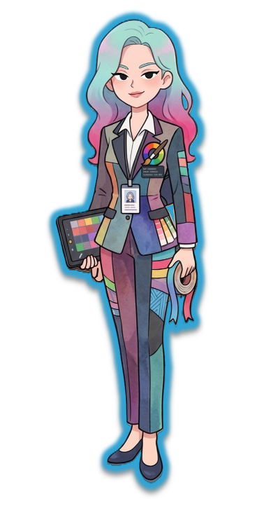

📜 임무 지령서

안녕하세요~ 신입 요원님! 환영해요 💕
저는 정보국 웹 특수작전팀 디자인 담당 CSS 요원이랍니다.
HTML 요원님이 튼튼한 뼈대를 만들어 주셨네요! 하지만 아직 색깔도 없고 조금 심심해 보이죠?
저와 함께 CSS 스타일링으로 도로랜드를 예쁘게 꾸며볼까요?
천천히 따라오시면 누구나 멋진 웹디자이너가 될 수 있어요~ 우측 편집기에서 미션을 시작해볼까요!
저는 정보국 웹 특수작전팀 디자인 담당 CSS 요원이랍니다.
HTML 요원님이 튼튼한 뼈대를 만들어 주셨네요! 하지만 아직 색깔도 없고 조금 심심해 보이죠?
저와 함께 CSS 스타일링으로 도로랜드를 예쁘게 꾸며볼까요?
천천히 따라오시면 누구나 멋진 웹디자이너가 될 수 있어요~ 우측 편집기에서 미션을 시작해볼까요!
📘 정보국 1급 기밀 (CSS 스타일 백과사전)
미션 1
배경색 칠하기
웹페이지 전체 배경색을 연한 파란색으로 칠해볼까요?
힌트: body 태그 사용body { background-color: #f0f8ff; }
미션 2
제목 색상 바꾸기
가장 큰 제목이 눈에 띄도록 진한 파란색으로 바꿔주세요!
힌트: h1 태그 사용h1 { color: #1e3a8a; }
미션 3
제목 가운데 정렬하기
제목이 예쁘게 가운데에 오도록 위치를 옮겨볼게요.
힌트: text-align 속성 사용h1 { text-align: center; }
미션 4
소개글 크기 키우기
사람들이 잘 읽을 수 있게 소개글의 크기를 18px로 키워주세요.
힌트: p 태그 사용p { font-size: 18px; }
미션 5
사진 테두리 둥글게 깎기
테마파크 사진이 부드러워 보이도록 모서리를 둥글게 깎아주세요~
힌트: border-radius 속성 사용img { border-radius: 20px; }
미션 6
버튼 예쁘게 꾸미기
제출 버튼에 색상과 안쪽 여백(padding)을 줘서 누르고 싶게 만들어요!
힌트: button 태그 사용button {
background-color: #38bdf8;
color: white;
border: none;
padding: 10px 20px;
border-radius: 5px;
cursor: pointer;
}
미션 7
버튼에 호버 마법 걸기
버튼에 마우스를 올렸을 때 진한 색으로 변하는 마법을 걸어주세요!
힌트: button:hover 사용button:hover { background-color: #0284c7; }
미션 8
섹션 꾸미기 (박스 마법)
내용이 들어있는 상자(content-box)에 예쁜 색상과 테두리를 줘서 특별한 구역으로 만들어볼까요?
힌트: .content-box 클래스 선택자 사용.content-box {
background-color: #e0f2fe;
padding: 20px;
border-radius: 10px;
border: 2px dashed #38bdf8;
}
🎨 코드 편집기 (CSS)
🌐 실시간 결과 화면